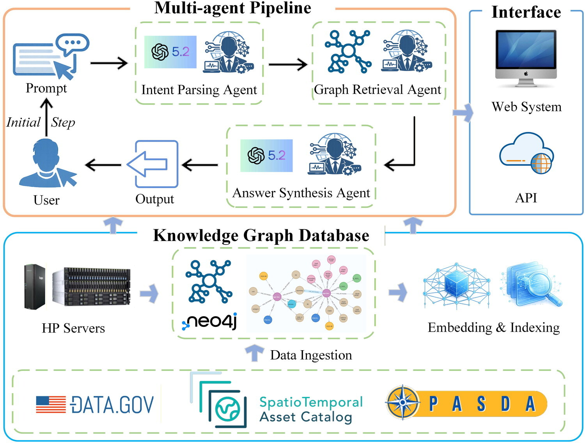
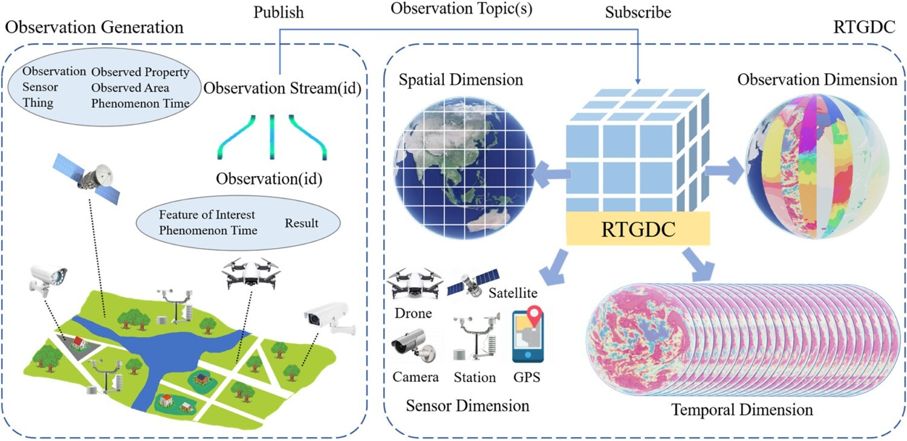

Towards intelligent geospatial data discovery
A knowledge graph-driven multi-agent framework powered by large language models.
Read the paperGeography · Penn State
Ph.D. Candidate in Geography
I study how intelligent geospatial systems discover data, reason about space, and help us understand a changing world.
My research connects autonomous GIS and spatial reasoning with high-performance geocomputing and human mobility. I work with Prof. Zhenlong Li in the Geoinformation and Big Data Research Laboratory.
From my research

A knowledge graph-driven multi-agent framework powered by large language models.
Read the paper
RTGDC: real-time ingestion and processing in geospatial data cubes for the digital twin of Earth.
Read the paperResearch & community
Presented “Towards Intelligent Geospatial Data Discovery” at the 2026 Western PA GIS Conference in Clarion, Pennsylvania. Read the paper →
Presented our work on knowledge graph-driven multi-agent geospatial data discovery at the 2026 ICDS Symposium at Penn State.
Paper published in International Journal of Geographical Information Science: “Towards intelligent geospatial data discovery: a knowledge graph-driven multi-agent framework powered by large language models.” (DOI)
Serving as a Research Assistant in Penn State’s Department of Geography and as Graduate Student Representative for Fall 2026–Spring 2027.
Mentoring Penn State undergraduate student Jared M. Schuster. Teaching and mentoring →
Let's connect
I welcome conversations about autonomous GIS, geospatial computing, standards, and human mobility.